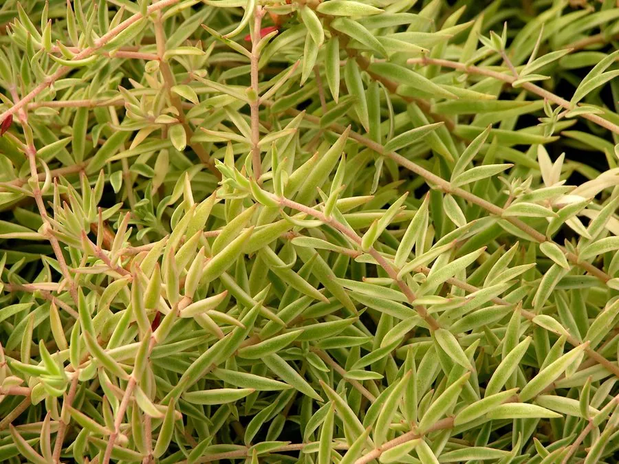

多肉植物 · 植物界
佛甲草 Sedum lineare

景天科景天属多年生肉质草本，叶片线状披针形、黄绿色，春夏开黄花，是耐旱耐寒的屋顶绿化与地被植物。
- 分类
- 门被子植物门纲木兰纲目虎耳草目科景天科属景天属
- 栖息环境
- 山坡、石缝与草地，耐旱、耐寒、耐瘠薄
- 地理分布
- 中国、日本、朝鲜；中国南北各地常见栽培或野生
- 保护级别
- IUCN 暂无评估；分布广，野生种群稳定
物种志
佛甲草为多年生肉质草本，高 10–20 厘米，茎细弱、丛生或匍匐。叶片线状披针形，长 2–3 厘米，肉质、黄绿色，轮生或对生。聚伞花序顶生，花黄色，花瓣 5 枚，星形，直径约 1 厘米，花期 4–5 月；蓇葖果成熟时开裂。
本种分布于中国、日本、朝鲜，生于山坡、石缝与草地，耐旱、耐寒、耐瘠薄，是屋顶绿化与护坡地被的优良植物。它的叶片肉质、覆盖力强，能在薄层基质上形成绿色地毯，被称为“屋顶绿化先锋”。佛甲草全草可入药，有清热解毒、消肿之效；繁殖以扦插与分株为主，生命力极强。夏季高温时需适当遮阴，避免叶片灼伤。在南方，它几乎全年常绿，冬季也不完全休眠。
形态与习性
- 株高10–20 厘米，茎细弱丛生
- 叶片线状披针形，长 2–3 厘米，黄绿色
- 花期4–5 月，花黄色、星形
- 光照喜光，夏季适当遮阴
- 水分耐旱，忌积水
- 土壤不择土壤，薄层基质即可生长
- 主要用途屋顶绿化、护坡地被与全草入药
趣味知识
- 佛甲草能在几厘米厚的屋顶基质上生长，是屋顶绿化的首选植物之一。
- 它的叶片肉质多汁，掐断后会流出透明汁液，因此又名“佛指甲”。
- 佛甲草耐寒耐旱，在北方也能露地越冬，春天早早在屋顶返青。
- 全草入药有清热解毒、消肿的作用，民间常用于捣敷疮肿。